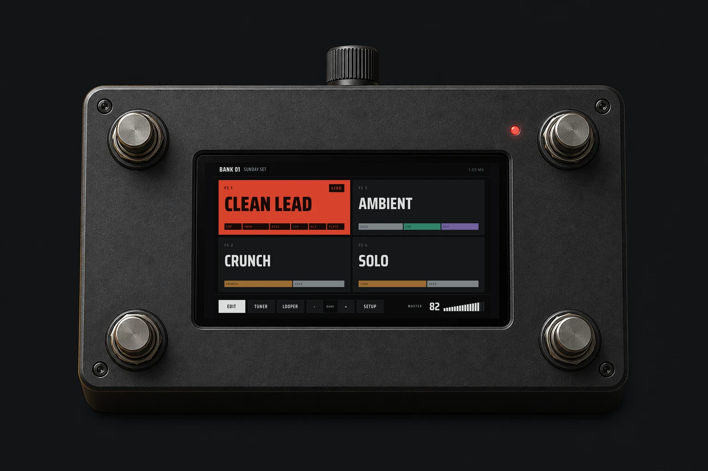

Play the whole rigfrom four footswitches.

Ardor runs NAM amp captures, cabinet IRs, and 48 built-in effects on a Raspberry Pi. The source is open.
Concept render with the real screen. A photo of the built pedal replaces it.
Hear it first.
One guitar take, recorded dry. Switch to the Ardor output while it plays.
Confirm: preset name and recording chain for this clipRead it from
standing height.
The live preset fills with red. Each tile shows its chain in family colors. The four tiles match the four footswitches.

Scenes in one preset.
Scenes change values inside one preset. The audio engine does not reload. Name them verse, chorus, solo, and outro.

Looper tracks.
The first loop sets the length. Each new layer starts on the loop boundary, so the layers stay in time.

Build the chain from left to right.
Add drive, amp, cabinet, and effect blocks in the order you want. Split into two lanes for a stereo rig.

48 effects.
Five families. Each family has one color, on the pedal and in the manager.
+ IR
Use the tones you already own.
Load Neural Amp Modeler captures and cabinet IRs in the browser manager. Ardor includes no third-party captures.
Every layer
is open.
The DSP engine, the touch UI, the preset format, the enclosure files, and the firmware image are MIT-licensed. Build it, change it, and send your changes back.